| หัวข้อ | รายละเอียด |
|---|---|
| เวลาเปิด | จันทร์–ศุกร์ 08:00–20:00 น. (รอบสุดท้ายเริ่ม 19:00) · ปิดเสาร์–อาทิตย์ |
| หน่วยการจอง | ครั้งละ 1 ชั่วโมง เริ่มตรงต้นชั่วโมงเสมอ |
| ห้องทั้งหมด | 13 ห้อง: ห้องซ้อม 1–10, ห้อง 301, ห้อง 303 และห้อง 304 |
| ระดับ | ทำอะไรได้ |
|---|---|
| นิสิต | จอง ใช้ห้องทันที เช็คอิน ยกเลิก และย้ายห้อง |
| อาจารย์ | ดูตารางห้อง และอนุมัติคำขอจองห้อง 301 (เมื่อได้รับแต่งตั้ง) |
| แอดมิน / เจ้าหน้าที่ | อนุมัติคำขอ จัดการผู้ใช้ ปิดห้อง พิมพ์ป้าย QR และดูสถิติ |
@student.chula.ac.th ชื่อ และเครื่องดนตรีหลัก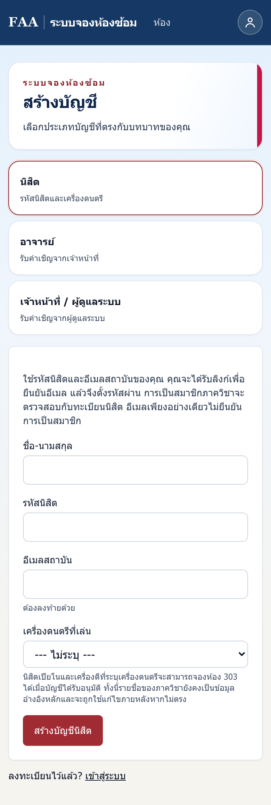
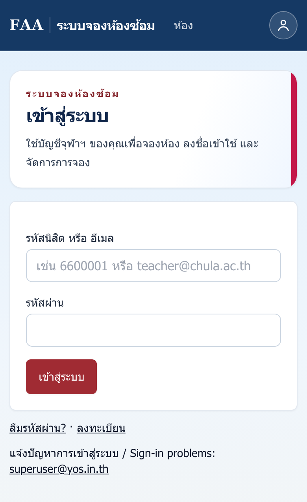
ข้อพึงระวัง ต้องใช้อีเมลนิสิต @student.chula.ac.th เท่านั้น อีเมล Gmail ส่วนตัวใช้สมัครไม่ได้
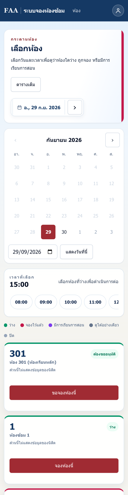
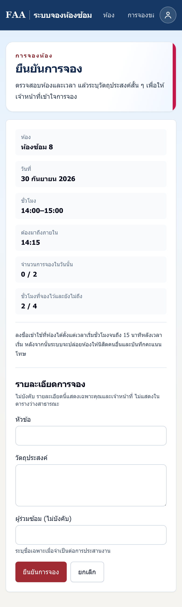
| กฎ | ค่าที่ใช้ |
|---|---|
| จองล่วงหน้าได้ | 2 วัน (นับรวมวันนี้) |
| จำนวนครั้งต่อวัน | ไม่เกิน 2 ครั้ง รวมทุกห้อง |
| ชั่วโมงที่ถือไว้พร้อมกัน | ไม่เกิน 4 ชั่วโมงที่ยังไม่ถึงเวลา พอชั่วโมงหนึ่งจบ ก็จองเพิ่มได้ |
| จองซ้ำทุกสัปดาห์ | ไม่มี ต้องจองเองทุกครั้ง |
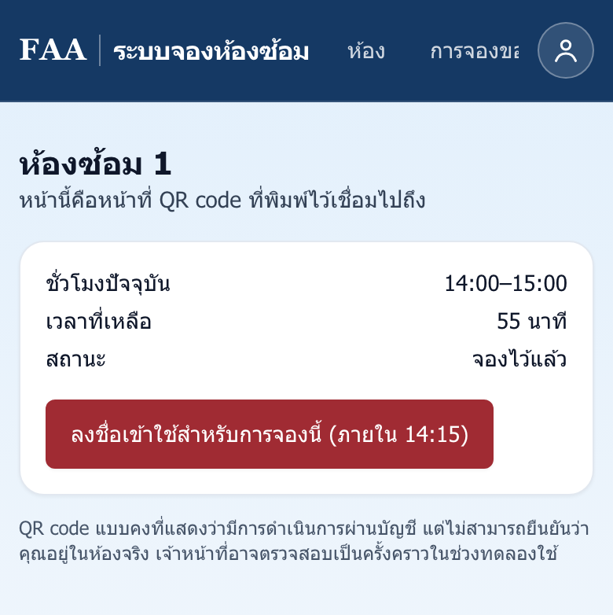
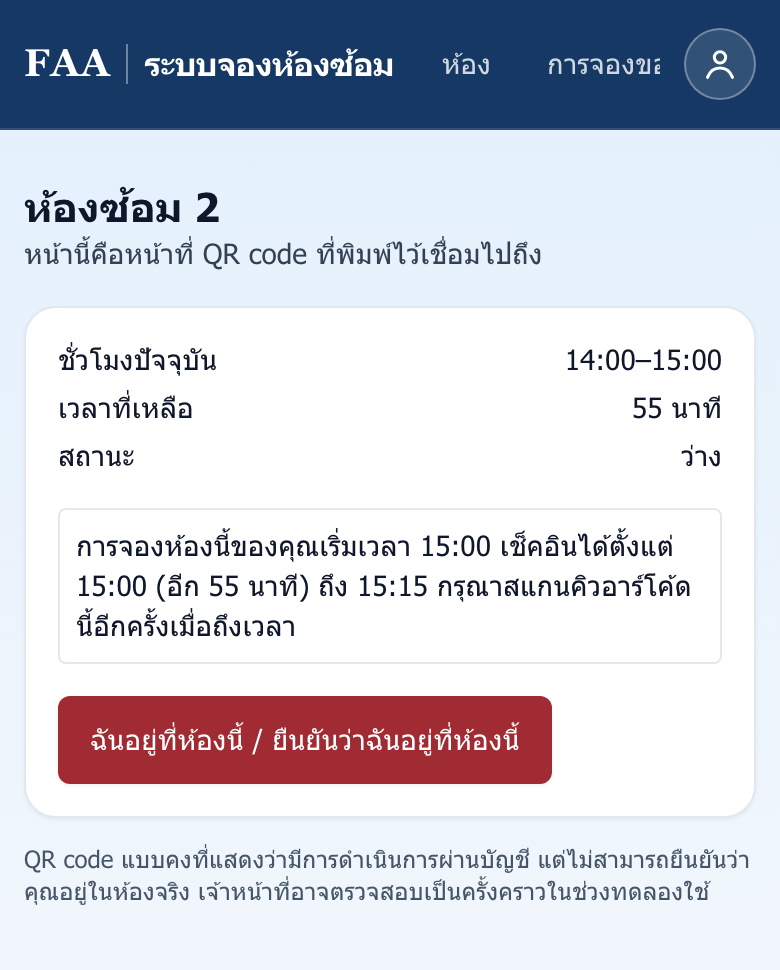
ถ้าสแกนแล้วไม่มีปุ่มเช็คอิน หน้าจอจะบอกเหตุผลไว้ ดังนี้
| ข้อความที่เห็น | ความหมาย | ทำอย่างไร |
|---|---|---|
| "เช็คอินได้ตั้งแต่ 15:00 (อีก 55 นาที)" | มาก่อนเวลา | รอแล้วสแกนใหม่เมื่อถึงเวลา |
| "ยังรอการอนุมัติจากเจ้าหน้าที่" | ห้อง 301, 303 หรือ 304 ที่ยังไม่ได้รับอนุมัติ | ดูผลที่หน้า การจองของฉัน |
| "การจองชั่วโมงนี้ของคุณอยู่ที่ห้อง X" | มาผิดห้อง | ไปสแกนที่ประตูห้อง X |
| "การเช็คอินปิดไปแล้วเมื่อ 14:15" | มาสายเกินเวลา | ห้องถูกปล่อยให้ผู้อื่น ถ้ามาตรงเวลาจริง ติดต่อสำนักงาน |
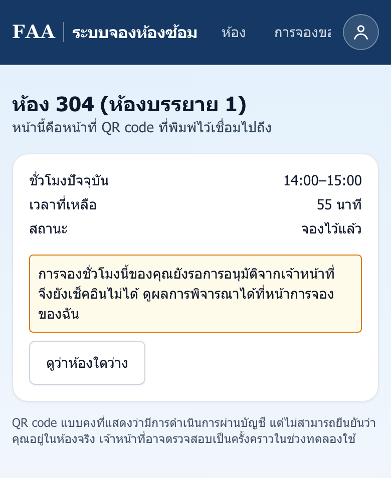
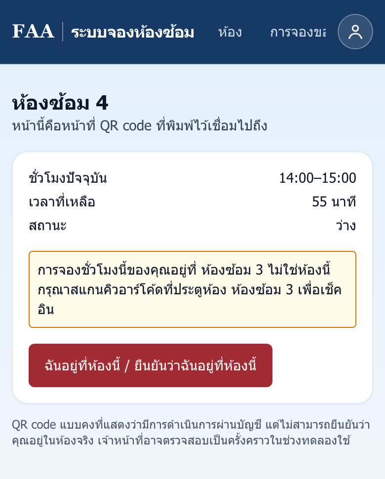
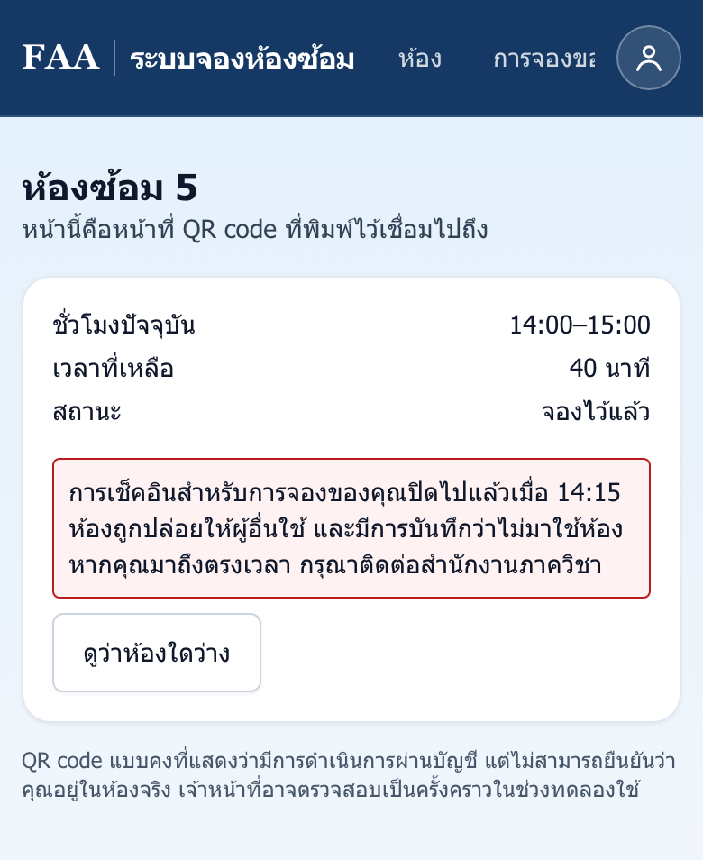
ข้อพึงระวัง เช็คอินจากอีเมลหรือจากหน้า การจองของฉัน ไม่ได้ ต้องสแกน QR ที่ประตูห้องเท่านั้น
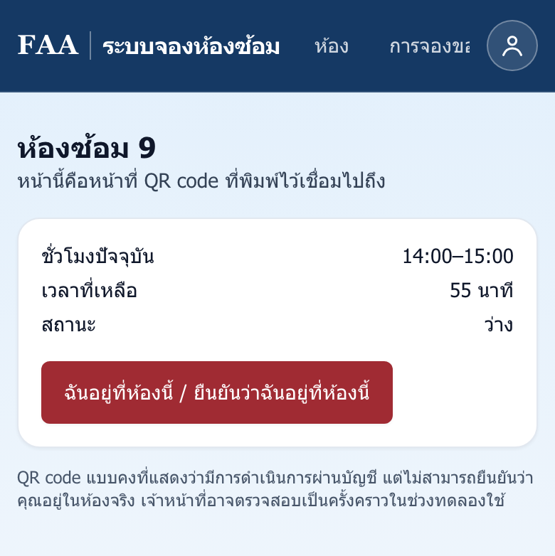
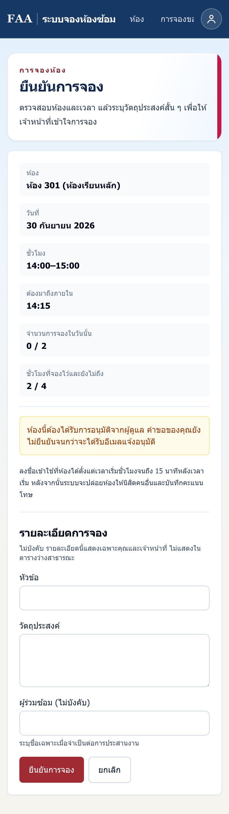
| ห้อง | เงื่อนไข |
|---|---|
| 301 ห้องเรียนหลัก | ขอจองล่วงหน้าได้เฉพาะชั่วโมงที่ไม่มีเรียน ต้องได้รับอนุมัติจากอาจารย์หรือแอดมิน |
| 303 | สำหรับนิสิตเปียโนและเครื่องกระทบ ต้องจองล่วงหน้าและรอเจ้าหน้าที่อนุมัติ |
| 304 ห้องบรรยาย | จองได้ในชั่วโมงที่ไม่มีเรียน ต้องรออนุมัติ |
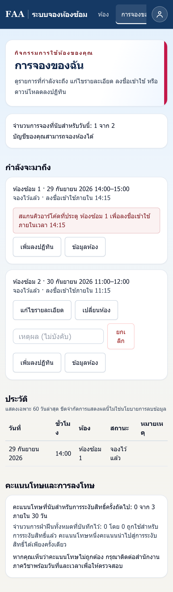
| เหตุการณ์ | ผล |
|---|---|
| ไม่เช็คอินภายในเวลา (No-show) | ได้ คะแนนโทษ 1 คะแนน และห้องถูกปล่อยให้ผู้อื่น |
| คะแนนโทษครบ 3 คะแนนภายใน 30 วัน | ระงับสิทธิ์การจอง 7 วัน และการจองที่มีอยู่ถูกยกเลิก |
| คิดว่าได้คะแนนโทษไม่ถูกต้อง | ติดต่อสำนักงานภาควิชา พร้อมแจ้งวันและเวลา |
Tips สำหรับนิสิต
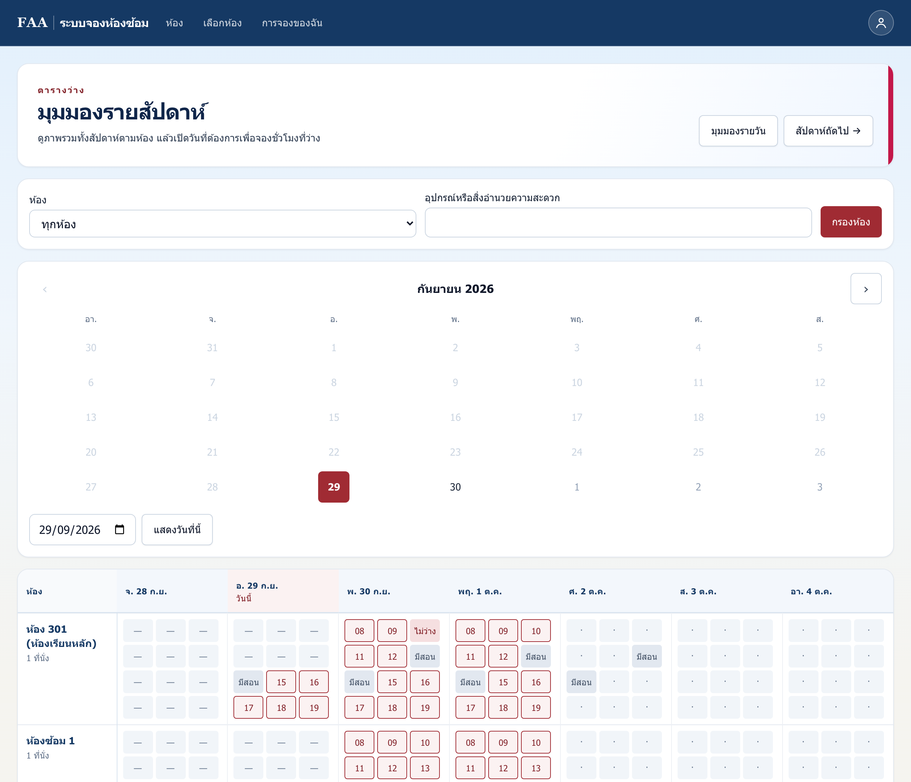
อาจารย์ที่แอดมินแต่งตั้งเป็น ผู้ดูแลห้อง 301 จะเห็นเมนู ดูแลห้อง ในเมนูบัญชี (ไอคอนรูปคนมุมขวาบน)
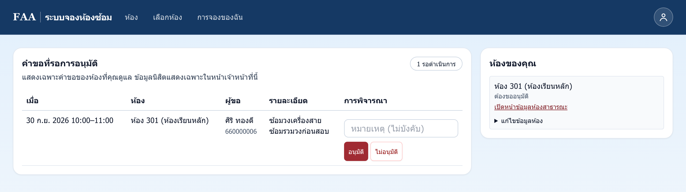
Tips สำหรับอาจารย์
| เมนู | ใช้ทำอะไร |
|---|---|
| วันนี้ | ดูการจองวันนี้ เช็คอินแทนนิสิต จบการใช้ก่อนเวลา |
| อนุมัติการจองห้อง | อนุมัติหรือปฏิเสธคำขอห้อง 301, 303 และ 304 |
| ผู้ใช้ | ค้นหาผู้ใช้ ระงับสิทธิ์ ยกเลิกคะแนนโทษ ปิดบัญชี |
| คำเชิญ | เชิญเจ้าหน้าที่และอาจารย์ |
| ทะเบียนนิสิต | นำเข้าหรือส่งออกรายชื่อ และแก้อีเมลนิสิต |
| การปิดห้อง / ปฏิทิน | ปิดห้องชั่วคราว กำหนดวันหยุด |
| เหตุขัดข้อง | บันทึกเหตุขัดข้อง ระบบยกเลิกการจองโดยไม่ลงโทษนิสิต |
| คิวอีเมล | ดูอีเมลที่ส่งไม่สำเร็จ |
| สถิติ / บันทึกการตรวจสอบ | รายงานการใช้งานและประวัติการแก้ไข |
| ป้ายติดห้อง | พิมพ์ป้าย QR ติดประตูห้อง |
| การตั้งค่า | แก้ข้อมูลห้อง และแต่งตั้งผู้ดูแลห้อง (เฉพาะ Maintainer) |
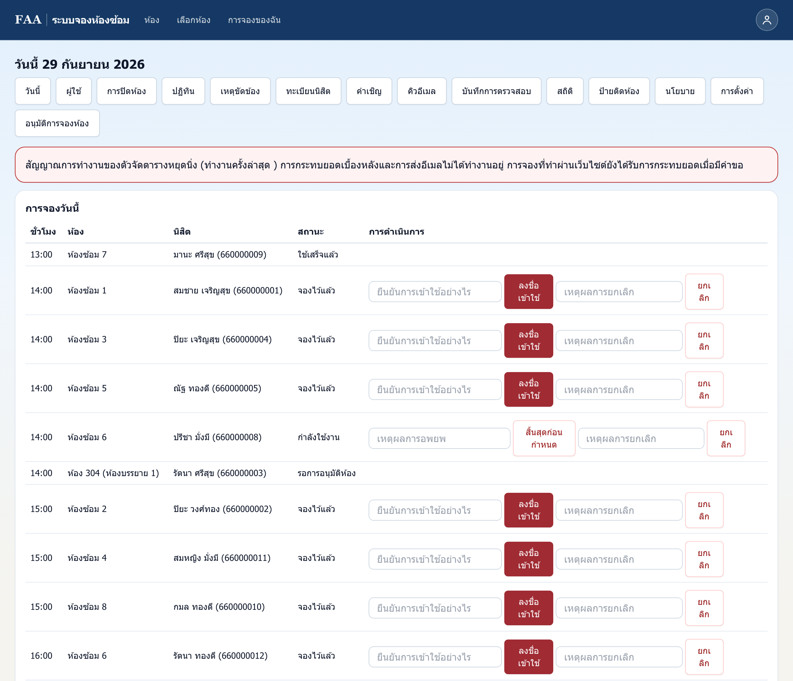
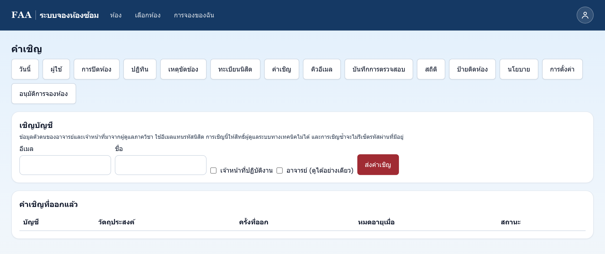
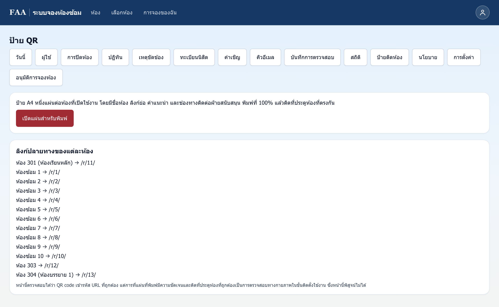
ข้อพึงระวัง
Tips สำหรับแอดมิน
คุณสิตานันท์ (พี่ดิว) · โทร 02-218-4604 · อีเมล superuser@yos.in.th
ภาควิชาดนตรีตะวันตก คณะศิลปกรรมศาสตร์ จุฬาลงกรณ์มหาวิทยาลัย
ภาพหน้าจอในคู่มือนี้ใช้ข้อมูลตัวอย่าง ไม่ใช่ข้อมูลนิสิตจริง